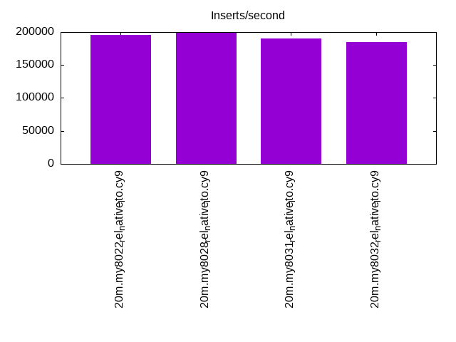
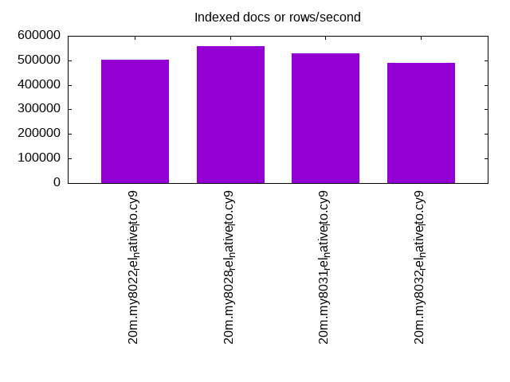
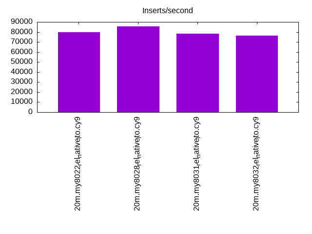
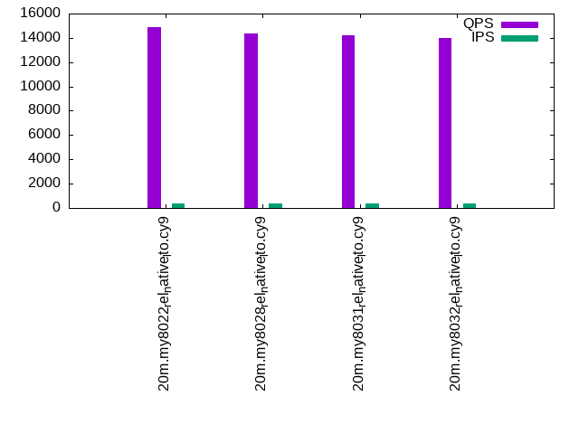
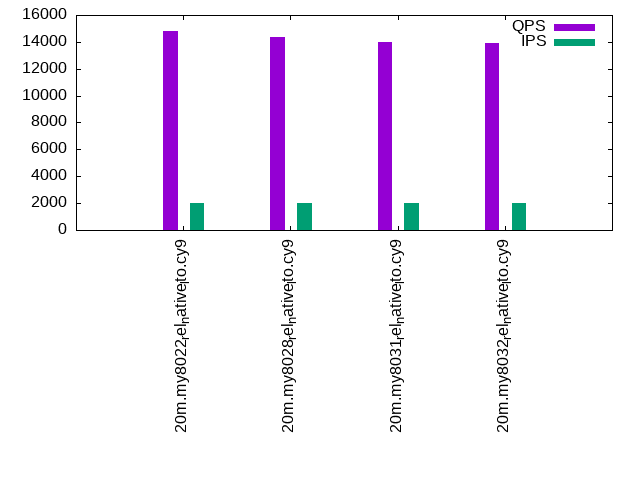
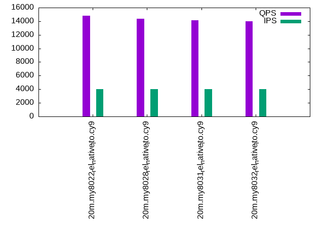

This is a report for the insert benchmark with 20M docs and 4 client(s). It is generated by scripts (bash, awk, sed) and Tufte might not be impressed. An overview of the insert benchmark is here and a short update is here. Below, by DBMS, I mean DBMS+version.config. An example is my8020.c10b40 where my means MySQL, 8020 is version 8.0.20 and c10b40 is the name for the configuration file.
The test server has 8 AMD cores, 16G RAM and an NVMe SSD. It is described here as the Beelink. The benchmark was run with 4 clients and there were 1 or 2 connections per client (1 for queries, 1 for inserts). The benchmark loads 20M rows without secondary indexes, creates secondary indexes, loads another 20M rows then does 3 read+write tests for one hour each that do queries as fast as possible with 100, 500 and then 1000 writes/second/client concurrent with the queries. There is 1 table per client. The database is cached by the storage engine and the only IO is for writes. Clients and the DBMS share one server. The per-database configs are in the per-database subdirectories here.
The tested DBMS are:
The numbers are inserts/s for l.i0 and l.i1, indexed docs (or rows) /s for l.x and queries/s for q*.2. The values are the average rate over the entire test for inserts (IPS) and queries (QPS). The range of values for IPS and QPS is split into 3 parts: bottom 25%, middle 50%, top 25%. Values in the bottom 25% have a red background, values in the top 25% have a green background and values in the middle have no color. A gray background is used for values that can be ignored because the DBMS did not sustain the target insert rate. Red backgrounds are not used when the minimum value is within 80% of the max value.
| dbms | l.i0 | l.x | l.i1 | q100.1 | q500.1 | q1000.1 |
|---|---|---|---|---|---|---|
| 20m.my8022_rel_native_lto.cy9 | 196078 | 502500 | 79681 | 14888 | 14817 | 14821 |
| 20m.my8028_rel_native_lto.cy9 | 200000 | 558333 | 85470 | 14344 | 14365 | 14360 |
| 20m.my8031_rel_native_lto.cy9 | 190476 | 528947 | 78125 | 14250 | 14001 | 14105 |
| 20m.my8032_rel_native_lto.cy9 | 185185 | 490244 | 76336 | 14026 | 13943 | 13979 |
This table has relative throughput, throughput for the DBMS relative to the DBMS in the first line, using the absolute throughput from the previous table.
| dbms | l.i0 | l.x | l.i1 | q100.1 | q500.1 | q1000.1 |
|---|---|---|---|---|---|---|
| 20m.my8022_rel_native_lto.cy9 | 1.00 | 1.00 | 1.00 | 1.00 | 1.00 | 1.00 |
| 20m.my8028_rel_native_lto.cy9 | 1.02 | 1.11 | 1.07 | 0.96 | 0.97 | 0.97 |
| 20m.my8031_rel_native_lto.cy9 | 0.97 | 1.05 | 0.98 | 0.96 | 0.94 | 0.95 |
| 20m.my8032_rel_native_lto.cy9 | 0.94 | 0.98 | 0.96 | 0.94 | 0.94 | 0.94 |
This lists the average rate of inserts/s for the tests that do inserts concurrent with queries. For such tests the query rate is listed in the table above. The read+write tests are setup so that the insert rate should match the target rate every second. Cells that are not at least 95% of the target have a red background to indicate a failure to satisfy the target.
| dbms | q100.1 | q500.1 | q1000.1 |
|---|---|---|---|
| my8022_rel_native_lto.cy9 | 399 | 1994 | 3989 |
| my8028_rel_native_lto.cy9 | 399 | 1994 | 3989 |
| my8031_rel_native_lto.cy9 | 399 | 1994 | 3989 |
| my8032_rel_native_lto.cy9 | 399 | 1994 | 3989 |
| target | 400 | 2000 | 4000 |
l.i0: load without secondary indexes. Graphs for performance per 1-second interval are here.
Average throughput:
Insert response time histogram: each cell has the percentage of responses that take <= the time in the header and max is the max response time in seconds. For the max column values in the top 25% of the range have a red background and in the bottom 25% of the range have a green background. The red background is not used when the min value is within 80% of the max value.
| dbms | 256us | 1ms | 4ms | 16ms | 64ms | 256ms | 1s | 4s | 16s | gt | max |
|---|---|---|---|---|---|---|---|---|---|---|---|
| my8022_rel_native_lto.cy9 | 98.776 | 1.004 | 0.202 | 0.017 | 0.124 | ||||||
| my8028_rel_native_lto.cy9 | 99.275 | 0.622 | 0.084 | 0.019 | 0.123 | ||||||
| my8031_rel_native_lto.cy9 | 99.252 | 0.615 | 0.118 | 0.015 | 0.116 | ||||||
| my8032_rel_native_lto.cy9 | 99.231 | 0.623 | 0.126 | 0.019 | 0.109 |
Performance metrics for the DBMS listed above. Some are normalized by throughput, others are not. Legend for results is here.
ips qps rps rmbps wps wmbps rpq rkbpq wpi wkbpi csps cpups cspq cpupq dbgb1 dbgb2 rss maxop p50 p99 tag 196078 0 0 0.0 356.4 53.0 0.000 0.000 0.002 0.277 22211 67.5 0.113 28 1.3 9.9 2.5 0.124 56938 21977 20m.my8022_rel_native_lto.cy9 200000 0 0 0.0 371.4 53.8 0.000 0.000 0.002 0.276 22502 68.5 0.113 27 1.3 9.9 2.5 0.123 57937 37759 20m.my8028_rel_native_lto.cy9 190476 0 0 0.0 340.6 52.8 0.000 0.000 0.002 0.284 21537 68.6 0.113 29 1.3 9.9 2.5 0.116 55240 35462 20m.my8031_rel_native_lto.cy9 185185 0 0 0.0 336.3 51.0 0.000 0.000 0.002 0.282 20197 65.1 0.109 28 1.3 9.9 2.5 0.109 53142 31482 20m.my8032_rel_native_lto.cy9
l.x: create secondary indexes.
Average throughput:
Performance metrics for the DBMS listed above. Some are normalized by throughput, others are not. Legend for results is here.
ips qps rps rmbps wps wmbps rpq rkbpq wpi wkbpi csps cpups cspq cpupq dbgb1 dbgb2 rss maxop p50 p99 tag 502500 0 0 0.0 4354.6 357.2 0.000 0.000 0.009 0.728 20064 44.1 0.040 7 3.0 11.6 2.8 0.003 NA NA 20m.my8022_rel_native_lto.cy9 558333 0 3026 198.2 10988.6 528.0 0.005 0.363 0.020 0.968 29828 84.6 0.053 12 3.0 11.6 3.5 0.008 NA NA 20m.my8028_rel_native_lto.cy9 528947 0 3021 198.1 7962.1 479.6 0.006 0.383 0.015 0.928 25282 85.2 0.048 13 3.0 11.6 3.5 0.010 NA NA 20m.my8031_rel_native_lto.cy9 490244 0 2646 173.3 8692.5 448.2 0.005 0.362 0.018 0.936 26015 86.1 0.053 14 3.0 11.6 3.7 0.009 NA NA 20m.my8032_rel_native_lto.cy9
l.i1: continue load after secondary indexes created. Graphs for performance per 1-second interval are here.
Average throughput:
Insert response time histogram: each cell has the percentage of responses that take <= the time in the header and max is the max response time in seconds. For the max column values in the top 25% of the range have a red background and in the bottom 25% of the range have a green background. The red background is not used when the min value is within 80% of the max value.
| dbms | 256us | 1ms | 4ms | 16ms | 64ms | 256ms | 1s | 4s | 16s | gt | max |
|---|---|---|---|---|---|---|---|---|---|---|---|
| my8022_rel_native_lto.cy9 | 97.767 | 1.807 | 0.400 | 0.027 | 0.120 | ||||||
| my8028_rel_native_lto.cy9 | 98.337 | 1.434 | 0.220 | 0.009 | 0.116 | ||||||
| my8031_rel_native_lto.cy9 | 98.139 | 1.602 | 0.249 | 0.009 | 0.121 | ||||||
| my8032_rel_native_lto.cy9 | 98.075 | 1.663 | 0.251 | 0.011 | 0.109 |
Performance metrics for the DBMS listed above. Some are normalized by throughput, others are not. Legend for results is here.
ips qps rps rmbps wps wmbps rpq rkbpq wpi wkbpi csps cpups cspq cpupq dbgb1 dbgb2 rss maxop p50 p99 tag 79681 0 366 5.7 1574.4 84.1 0.005 0.073 0.020 1.080 20472 58.2 0.257 58 7.9 16.5 8.4 0.120 21326 999 20m.my8022_rel_native_lto.cy9 85470 0 397 6.2 1656.1 89.5 0.005 0.074 0.019 1.073 22537 60.5 0.264 57 7.9 16.5 8.4 0.116 22538 1398 20m.my8028_rel_native_lto.cy9 78125 0 358 5.6 1835.2 95.9 0.005 0.073 0.023 1.257 21421 59.0 0.274 60 7.9 16.5 8.4 0.121 20486 1798 20m.my8031_rel_native_lto.cy9 76336 0 352 5.5 1810.8 94.8 0.005 0.074 0.024 1.272 21085 58.9 0.276 62 7.9 16.5 8.4 0.109 20178 1498 20m.my8032_rel_native_lto.cy9
q100.1: range queries with 100 insert/s per client. Graphs for performance per 1-second interval are here.
Average throughput:
Query response time histogram: each cell has the percentage of responses that take <= the time in the header and max is the max response time in seconds. For max values in the top 25% of the range have a red background and in the bottom 25% of the range have a green background. The red background is not used when the min value is within 80% of the max value.
| dbms | 256us | 1ms | 4ms | 16ms | 64ms | 256ms | 1s | 4s | 16s | gt | max |
|---|---|---|---|---|---|---|---|---|---|---|---|
| my8022_rel_native_lto.cy9 | 56.665 | 43.329 | 0.005 | nonzero | nonzero | 0.023 | |||||
| my8028_rel_native_lto.cy9 | 52.248 | 47.746 | 0.005 | nonzero | nonzero | 0.022 | |||||
| my8031_rel_native_lto.cy9 | 52.194 | 47.801 | 0.005 | nonzero | nonzero | 0.026 | |||||
| my8032_rel_native_lto.cy9 | 49.467 | 50.527 | 0.005 | nonzero | nonzero | 0.022 |
Insert response time histogram: each cell has the percentage of responses that take <= the time in the header and max is the max response time in seconds. For max values in the top 25% of the range have a red background and in the bottom 25% of the range have a green background. The red background is not used when the min value is within 80% of the max value.
| dbms | 256us | 1ms | 4ms | 16ms | 64ms | 256ms | 1s | 4s | 16s | gt | max |
|---|---|---|---|---|---|---|---|---|---|---|---|
| my8022_rel_native_lto.cy9 | 98.556 | 0.562 | 0.882 | 0.030 | |||||||
| my8028_rel_native_lto.cy9 | 98.389 | 0.868 | 0.743 | 0.024 | |||||||
| my8031_rel_native_lto.cy9 | 98.639 | 0.562 | 0.799 | 0.030 | |||||||
| my8032_rel_native_lto.cy9 | 98.285 | 0.965 | 0.750 | 0.029 |
Performance metrics for the DBMS listed above. Some are normalized by throughput, others are not. Legend for results is here.
ips qps rps rmbps wps wmbps rpq rkbpq wpi wkbpi csps cpups cspq cpupq dbgb1 dbgb2 rss maxop p50 p99 tag 399 14888 0 0.0 214.9 5.7 0.000 0.000 0.539 14.597 57226 50.5 3.844 271 8.4 17.0 8.9 0.023 3741 3310 20m.my8022_rel_native_lto.cy9 399 14344 0 0.0 217.5 5.7 0.000 0.000 0.545 14.702 55256 50.4 3.852 281 8.4 17.0 8.8 0.022 3596 3196 20m.my8028_rel_native_lto.cy9 399 14250 0 0.0 224.0 6.0 0.000 0.000 0.562 15.343 55058 50.2 3.864 282 8.4 17.0 8.8 0.026 3532 2894 20m.my8031_rel_native_lto.cy9 399 14026 0 0.0 222.9 5.9 0.000 0.000 0.559 15.249 54269 50.2 3.869 286 8.4 17.0 8.8 0.022 3564 2893 20m.my8032_rel_native_lto.cy9
q500.1: range queries with 500 insert/s per client. Graphs for performance per 1-second interval are here.
Average throughput:
Query response time histogram: each cell has the percentage of responses that take <= the time in the header and max is the max response time in seconds. For max values in the top 25% of the range have a red background and in the bottom 25% of the range have a green background. The red background is not used when the min value is within 80% of the max value.
| dbms | 256us | 1ms | 4ms | 16ms | 64ms | 256ms | 1s | 4s | 16s | gt | max |
|---|---|---|---|---|---|---|---|---|---|---|---|
| my8022_rel_native_lto.cy9 | 56.239 | 43.745 | 0.014 | 0.001 | 0.001 | 0.031 | |||||
| my8028_rel_native_lto.cy9 | 52.880 | 47.102 | 0.016 | 0.001 | nonzero | 0.021 | |||||
| my8031_rel_native_lto.cy9 | 48.953 | 51.030 | 0.016 | 0.001 | nonzero | 0.021 | |||||
| my8032_rel_native_lto.cy9 | 47.990 | 51.993 | 0.016 | 0.002 | nonzero | 0.023 |
Insert response time histogram: each cell has the percentage of responses that take <= the time in the header and max is the max response time in seconds. For max values in the top 25% of the range have a red background and in the bottom 25% of the range have a green background. The red background is not used when the min value is within 80% of the max value.
| dbms | 256us | 1ms | 4ms | 16ms | 64ms | 256ms | 1s | 4s | 16s | gt | max |
|---|---|---|---|---|---|---|---|---|---|---|---|
| my8022_rel_native_lto.cy9 | 95.454 | 4.085 | 0.413 | 0.049 | 0.106 | ||||||
| my8028_rel_native_lto.cy9 | 97.739 | 1.946 | 0.303 | 0.013 | 0.103 | ||||||
| my8031_rel_native_lto.cy9 | 97.372 | 2.233 | 0.354 | 0.040 | 0.108 | ||||||
| my8032_rel_native_lto.cy9 | 95.213 | 4.362 | 0.375 | 0.050 | 0.109 |
Performance metrics for the DBMS listed above. Some are normalized by throughput, others are not. Legend for results is here.
ips qps rps rmbps wps wmbps rpq rkbpq wpi wkbpi csps cpups cspq cpupq dbgb1 dbgb2 rss maxop p50 p99 tag 1994 14817 0 0.0 158.1 5.1 0.000 0.000 0.079 2.598 56285 51.4 3.799 278 9.5 18.0 9.8 0.031 3774 3342 20m.my8022_rel_native_lto.cy9 1994 14365 0 0.0 189.9 5.9 0.000 0.000 0.095 3.007 54889 51.3 3.821 286 9.5 18.0 9.7 0.021 3532 3133 20m.my8028_rel_native_lto.cy9 1994 14001 0 0.0 242.7 7.3 0.000 0.000 0.122 3.770 53742 51.2 3.838 293 9.5 18.0 9.8 0.021 3404 2893 20m.my8031_rel_native_lto.cy9 1994 13943 0 0.0 244.2 7.4 0.000 0.000 0.122 3.794 53492 51.2 3.836 294 9.5 18.0 9.8 0.023 3436 2877 20m.my8032_rel_native_lto.cy9
q1000.1: range queries with 1000 insert/s per client. Graphs for performance per 1-second interval are here.
Average throughput:
Query response time histogram: each cell has the percentage of responses that take <= the time in the header and max is the max response time in seconds. For max values in the top 25% of the range have a red background and in the bottom 25% of the range have a green background. The red background is not used when the min value is within 80% of the max value.
| dbms | 256us | 1ms | 4ms | 16ms | 64ms | 256ms | 1s | 4s | 16s | gt | max |
|---|---|---|---|---|---|---|---|---|---|---|---|
| my8022_rel_native_lto.cy9 | 56.828 | 43.140 | 0.028 | 0.003 | nonzero | 0.030 | |||||
| my8028_rel_native_lto.cy9 | 52.516 | 47.454 | 0.026 | 0.003 | nonzero | 0.021 | |||||
| my8031_rel_native_lto.cy9 | 49.477 | 50.487 | 0.033 | 0.002 | nonzero | 0.020 | |||||
| my8032_rel_native_lto.cy9 | 47.786 | 52.176 | 0.035 | 0.003 | nonzero | 0.020 |
Insert response time histogram: each cell has the percentage of responses that take <= the time in the header and max is the max response time in seconds. For max values in the top 25% of the range have a red background and in the bottom 25% of the range have a green background. The red background is not used when the min value is within 80% of the max value.
| dbms | 256us | 1ms | 4ms | 16ms | 64ms | 256ms | 1s | 4s | 16s | gt | max |
|---|---|---|---|---|---|---|---|---|---|---|---|
| my8022_rel_native_lto.cy9 | 95.199 | 4.572 | 0.165 | 0.065 | 0.122 | ||||||
| my8028_rel_native_lto.cy9 | 94.956 | 4.787 | 0.151 | 0.106 | 0.112 | ||||||
| my8031_rel_native_lto.cy9 | 97.936 | 1.935 | 0.114 | 0.015 | 0.108 | ||||||
| my8032_rel_native_lto.cy9 | 97.426 | 2.424 | 0.126 | 0.024 | 0.108 |
Performance metrics for the DBMS listed above. Some are normalized by throughput, others are not. Legend for results is here.
ips qps rps rmbps wps wmbps rpq rkbpq wpi wkbpi csps cpups cspq cpupq dbgb1 dbgb2 rss maxop p50 p99 tag 3989 14821 0 0.0 334.6 9.7 0.000 0.000 0.084 2.494 55809 52.6 3.766 284 10.0 18.6 10.4 0.030 3740 3310 20m.my8022_rel_native_lto.cy9 3989 14360 0 0.0 322.9 9.4 0.000 0.000 0.081 2.416 54313 52.6 3.782 293 10.1 18.6 10.3 0.021 3574 3165 20m.my8028_rel_native_lto.cy9 3989 14105 0 0.0 372.7 10.8 0.000 0.000 0.093 2.784 53652 52.6 3.804 298 10.0 18.6 10.3 0.020 3486 2925 20m.my8031_rel_native_lto.cy9 3989 13979 0 0.0 370.5 10.8 0.000 0.000 0.093 2.773 53159 52.8 3.803 302 10.1 18.6 10.3 0.020 3436 2925 20m.my8032_rel_native_lto.cy9
l.i0: load without secondary indexes
Performance metrics for all DBMS, not just the ones listed above. Some are normalized by throughput, others are not. Legend for results is here.
ips qps rps rmbps wps wmbps rpq rkbpq wpi wkbpi csps cpups cspq cpupq dbgb1 dbgb2 rss maxop p50 p99 tag 196078 0 0 0.0 356.4 53.0 0.000 0.000 0.002 0.277 22211 67.5 0.113 28 1.3 9.9 2.5 0.124 56938 21977 20m.my8022_rel_native_lto.cy9 200000 0 0 0.0 371.4 53.8 0.000 0.000 0.002 0.276 22502 68.5 0.113 27 1.3 9.9 2.5 0.123 57937 37759 20m.my8028_rel_native_lto.cy9 190476 0 0 0.0 340.6 52.8 0.000 0.000 0.002 0.284 21537 68.6 0.113 29 1.3 9.9 2.5 0.116 55240 35462 20m.my8031_rel_native_lto.cy9 185185 0 0 0.0 336.3 51.0 0.000 0.000 0.002 0.282 20197 65.1 0.109 28 1.3 9.9 2.5 0.109 53142 31482 20m.my8032_rel_native_lto.cy9
l.x: create secondary indexes
Performance metrics for all DBMS, not just the ones listed above. Some are normalized by throughput, others are not. Legend for results is here.
ips qps rps rmbps wps wmbps rpq rkbpq wpi wkbpi csps cpups cspq cpupq dbgb1 dbgb2 rss maxop p50 p99 tag 502500 0 0 0.0 4354.6 357.2 0.000 0.000 0.009 0.728 20064 44.1 0.040 7 3.0 11.6 2.8 0.003 NA NA 20m.my8022_rel_native_lto.cy9 558333 0 3026 198.2 10988.6 528.0 0.005 0.363 0.020 0.968 29828 84.6 0.053 12 3.0 11.6 3.5 0.008 NA NA 20m.my8028_rel_native_lto.cy9 528947 0 3021 198.1 7962.1 479.6 0.006 0.383 0.015 0.928 25282 85.2 0.048 13 3.0 11.6 3.5 0.010 NA NA 20m.my8031_rel_native_lto.cy9 490244 0 2646 173.3 8692.5 448.2 0.005 0.362 0.018 0.936 26015 86.1 0.053 14 3.0 11.6 3.7 0.009 NA NA 20m.my8032_rel_native_lto.cy9
l.i1: continue load after secondary indexes created
Performance metrics for all DBMS, not just the ones listed above. Some are normalized by throughput, others are not. Legend for results is here.
ips qps rps rmbps wps wmbps rpq rkbpq wpi wkbpi csps cpups cspq cpupq dbgb1 dbgb2 rss maxop p50 p99 tag 79681 0 366 5.7 1574.4 84.1 0.005 0.073 0.020 1.080 20472 58.2 0.257 58 7.9 16.5 8.4 0.120 21326 999 20m.my8022_rel_native_lto.cy9 85470 0 397 6.2 1656.1 89.5 0.005 0.074 0.019 1.073 22537 60.5 0.264 57 7.9 16.5 8.4 0.116 22538 1398 20m.my8028_rel_native_lto.cy9 78125 0 358 5.6 1835.2 95.9 0.005 0.073 0.023 1.257 21421 59.0 0.274 60 7.9 16.5 8.4 0.121 20486 1798 20m.my8031_rel_native_lto.cy9 76336 0 352 5.5 1810.8 94.8 0.005 0.074 0.024 1.272 21085 58.9 0.276 62 7.9 16.5 8.4 0.109 20178 1498 20m.my8032_rel_native_lto.cy9
q100.1: range queries with 100 insert/s per client
Performance metrics for all DBMS, not just the ones listed above. Some are normalized by throughput, others are not. Legend for results is here.
ips qps rps rmbps wps wmbps rpq rkbpq wpi wkbpi csps cpups cspq cpupq dbgb1 dbgb2 rss maxop p50 p99 tag 399 14888 0 0.0 214.9 5.7 0.000 0.000 0.539 14.597 57226 50.5 3.844 271 8.4 17.0 8.9 0.023 3741 3310 20m.my8022_rel_native_lto.cy9 399 14344 0 0.0 217.5 5.7 0.000 0.000 0.545 14.702 55256 50.4 3.852 281 8.4 17.0 8.8 0.022 3596 3196 20m.my8028_rel_native_lto.cy9 399 14250 0 0.0 224.0 6.0 0.000 0.000 0.562 15.343 55058 50.2 3.864 282 8.4 17.0 8.8 0.026 3532 2894 20m.my8031_rel_native_lto.cy9 399 14026 0 0.0 222.9 5.9 0.000 0.000 0.559 15.249 54269 50.2 3.869 286 8.4 17.0 8.8 0.022 3564 2893 20m.my8032_rel_native_lto.cy9
q500.1: range queries with 500 insert/s per client
Performance metrics for all DBMS, not just the ones listed above. Some are normalized by throughput, others are not. Legend for results is here.
ips qps rps rmbps wps wmbps rpq rkbpq wpi wkbpi csps cpups cspq cpupq dbgb1 dbgb2 rss maxop p50 p99 tag 1994 14817 0 0.0 158.1 5.1 0.000 0.000 0.079 2.598 56285 51.4 3.799 278 9.5 18.0 9.8 0.031 3774 3342 20m.my8022_rel_native_lto.cy9 1994 14365 0 0.0 189.9 5.9 0.000 0.000 0.095 3.007 54889 51.3 3.821 286 9.5 18.0 9.7 0.021 3532 3133 20m.my8028_rel_native_lto.cy9 1994 14001 0 0.0 242.7 7.3 0.000 0.000 0.122 3.770 53742 51.2 3.838 293 9.5 18.0 9.8 0.021 3404 2893 20m.my8031_rel_native_lto.cy9 1994 13943 0 0.0 244.2 7.4 0.000 0.000 0.122 3.794 53492 51.2 3.836 294 9.5 18.0 9.8 0.023 3436 2877 20m.my8032_rel_native_lto.cy9
q1000.1: range queries with 1000 insert/s per client
Performance metrics for all DBMS, not just the ones listed above. Some are normalized by throughput, others are not. Legend for results is here.
ips qps rps rmbps wps wmbps rpq rkbpq wpi wkbpi csps cpups cspq cpupq dbgb1 dbgb2 rss maxop p50 p99 tag 3989 14821 0 0.0 334.6 9.7 0.000 0.000 0.084 2.494 55809 52.6 3.766 284 10.0 18.6 10.4 0.030 3740 3310 20m.my8022_rel_native_lto.cy9 3989 14360 0 0.0 322.9 9.4 0.000 0.000 0.081 2.416 54313 52.6 3.782 293 10.1 18.6 10.3 0.021 3574 3165 20m.my8028_rel_native_lto.cy9 3989 14105 0 0.0 372.7 10.8 0.000 0.000 0.093 2.784 53652 52.6 3.804 298 10.0 18.6 10.3 0.020 3486 2925 20m.my8031_rel_native_lto.cy9 3989 13979 0 0.0 370.5 10.8 0.000 0.000 0.093 2.773 53159 52.8 3.803 302 10.1 18.6 10.3 0.020 3436 2925 20m.my8032_rel_native_lto.cy9
Insert response time histogram
256us 1ms 4ms 16ms 64ms 256ms 1s 4s 16s gt max tag 0.000 0.000 98.776 1.004 0.202 0.017 0.000 0.000 0.000 0.000 0.124 my8022_rel_native_lto.cy9 0.000 0.000 99.275 0.622 0.084 0.019 0.000 0.000 0.000 0.000 0.123 my8028_rel_native_lto.cy9 0.000 0.000 99.252 0.615 0.118 0.015 0.000 0.000 0.000 0.000 0.116 my8031_rel_native_lto.cy9 0.000 0.000 99.231 0.623 0.126 0.019 0.000 0.000 0.000 0.000 0.109 my8032_rel_native_lto.cy9
TODO - determine whether there is data for create index response time
Insert response time histogram
256us 1ms 4ms 16ms 64ms 256ms 1s 4s 16s gt max tag 0.000 0.000 97.767 1.807 0.400 0.027 0.000 0.000 0.000 0.000 0.120 my8022_rel_native_lto.cy9 0.000 0.000 98.337 1.434 0.220 0.009 0.000 0.000 0.000 0.000 0.116 my8028_rel_native_lto.cy9 0.000 0.000 98.139 1.602 0.249 0.009 0.000 0.000 0.000 0.000 0.121 my8031_rel_native_lto.cy9 0.000 0.000 98.075 1.663 0.251 0.011 0.000 0.000 0.000 0.000 0.109 my8032_rel_native_lto.cy9
Query response time histogram
256us 1ms 4ms 16ms 64ms 256ms 1s 4s 16s gt max tag 56.665 43.329 0.005 nonzero nonzero 0.000 0.000 0.000 0.000 0.000 0.023 my8022_rel_native_lto.cy9 52.248 47.746 0.005 nonzero nonzero 0.000 0.000 0.000 0.000 0.000 0.022 my8028_rel_native_lto.cy9 52.194 47.801 0.005 nonzero nonzero 0.000 0.000 0.000 0.000 0.000 0.026 my8031_rel_native_lto.cy9 49.467 50.527 0.005 nonzero nonzero 0.000 0.000 0.000 0.000 0.000 0.022 my8032_rel_native_lto.cy9
Insert response time histogram
256us 1ms 4ms 16ms 64ms 256ms 1s 4s 16s gt max tag 0.000 0.000 98.556 0.562 0.882 0.000 0.000 0.000 0.000 0.000 0.030 my8022_rel_native_lto.cy9 0.000 0.000 98.389 0.868 0.743 0.000 0.000 0.000 0.000 0.000 0.024 my8028_rel_native_lto.cy9 0.000 0.000 98.639 0.562 0.799 0.000 0.000 0.000 0.000 0.000 0.030 my8031_rel_native_lto.cy9 0.000 0.000 98.285 0.965 0.750 0.000 0.000 0.000 0.000 0.000 0.029 my8032_rel_native_lto.cy9
Query response time histogram
256us 1ms 4ms 16ms 64ms 256ms 1s 4s 16s gt max tag 56.239 43.745 0.014 0.001 0.001 0.000 0.000 0.000 0.000 0.000 0.031 my8022_rel_native_lto.cy9 52.880 47.102 0.016 0.001 nonzero 0.000 0.000 0.000 0.000 0.000 0.021 my8028_rel_native_lto.cy9 48.953 51.030 0.016 0.001 nonzero 0.000 0.000 0.000 0.000 0.000 0.021 my8031_rel_native_lto.cy9 47.990 51.993 0.016 0.002 nonzero 0.000 0.000 0.000 0.000 0.000 0.023 my8032_rel_native_lto.cy9
Insert response time histogram
256us 1ms 4ms 16ms 64ms 256ms 1s 4s 16s gt max tag 0.000 0.000 95.454 4.085 0.413 0.049 0.000 0.000 0.000 0.000 0.106 my8022_rel_native_lto.cy9 0.000 0.000 97.739 1.946 0.303 0.013 0.000 0.000 0.000 0.000 0.103 my8028_rel_native_lto.cy9 0.000 0.000 97.372 2.233 0.354 0.040 0.000 0.000 0.000 0.000 0.108 my8031_rel_native_lto.cy9 0.000 0.000 95.213 4.362 0.375 0.050 0.000 0.000 0.000 0.000 0.109 my8032_rel_native_lto.cy9
Query response time histogram
256us 1ms 4ms 16ms 64ms 256ms 1s 4s 16s gt max tag 56.828 43.140 0.028 0.003 nonzero 0.000 0.000 0.000 0.000 0.000 0.030 my8022_rel_native_lto.cy9 52.516 47.454 0.026 0.003 nonzero 0.000 0.000 0.000 0.000 0.000 0.021 my8028_rel_native_lto.cy9 49.477 50.487 0.033 0.002 nonzero 0.000 0.000 0.000 0.000 0.000 0.020 my8031_rel_native_lto.cy9 47.786 52.176 0.035 0.003 nonzero 0.000 0.000 0.000 0.000 0.000 0.020 my8032_rel_native_lto.cy9
Insert response time histogram
256us 1ms 4ms 16ms 64ms 256ms 1s 4s 16s gt max tag 0.000 0.000 95.199 4.572 0.165 0.065 0.000 0.000 0.000 0.000 0.122 my8022_rel_native_lto.cy9 0.000 0.000 94.956 4.787 0.151 0.106 0.000 0.000 0.000 0.000 0.112 my8028_rel_native_lto.cy9 0.000 0.000 97.936 1.935 0.114 0.015 0.000 0.000 0.000 0.000 0.108 my8031_rel_native_lto.cy9 0.000 0.000 97.426 2.424 0.126 0.024 0.000 0.000 0.000 0.000 0.108 my8032_rel_native_lto.cy9